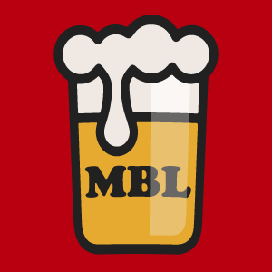

An open format brewing log for wine, beer, yogurt, sourdough bread, etc.
My Brew Log is set to revolutionize the way home brewers keep track of their brews, no matter what it is they are making. The open format for creating recipes allows the user to easily track different products with as much or little detail as needed. It’s only a matter of time before My Brew Log is a must have application for home brewers everywhere to track their recipes.
Brewing beer and wine at home can be a fun and rewarding process. You get to experiment with various little details that can have a huge impact on the end result. Some experiments don’t work so well and can be forgotten while others work out pretty good. Just a little tweak and it could be great. You need to be able to recreate the recipe before you can try any modifications though. Did you write down all the ingredients? How about notes on when each part took place or the total time? Each of these plays a part in making the end product so you need good notes. You need a recipe to work from in order to recreate it or make it better.
My Brew Log will allow you to save your recipes and notes so you can create that brew again. Easily edit or create a new version as you experiment. Keep track of what adjustments you’ve tried and how they turned out. Have a recipe you really love? Share it with the world. Browse user recipes and give them a try.